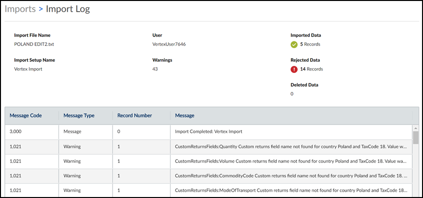

Question
How do I view the errors and warnings I received from the import process?
Answer
You can view error and warning information in the Import Error Log. In the row containing the import, click the three dots in the Actions column, and select View Import Error Log.

This table explains the fields, columns, and buttons in the Import Log:
|
Field or Column Name |
Description |
|
Import File Name |
The name of the imported data file. |
|
Import Setup Name |
The import setup that was selected when the file was imported. If you select an incorrect import setup for your file, the import fails. |
|
User |
The login name of the user who imported the file. |
|
Warnings |
The number of records accepted with either data modified by Global Compliance or flagged because a potential problem exists. |
|
Imported Data |
The number of records imported. This number includes records that imported successfully as-is and records that imported but were flagged with warning messages. |
|
Rejected Data |
The number of records that failed an import test and were not accepted. |
|
Deleted Data |
If you deleted any tax data after you imported a file, the number of records now missing from that import file. |
|
Message Code |
The number that displays in the Error # column in the Import Errors database. |
|
Message Type |
Types of messages are the following:
|
|
Record Number |
The number of the record from the import file. |
|
Message |
Informational messages, errors, and warnings. This column provides you with more information about what occurred during your file import, including the success of the import and details about any issues in your import file. |
|
.CSV |
You can print and save the grid as a CSV file by clicking the .CSV button. |
Related topics: